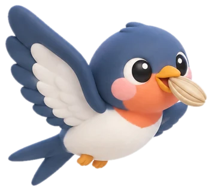

박씨
Bakseed
클로즈드 베타 · 초대 전용
한국어
ENG
우리 집의 기운을
읽어 드려요
뒷산과 물길, 바람길로 집터를 쉬운 말로 읽어 드려요
보기
캘리포니아·텍사스 집 주소를 넣거나, 아래 세 곳을 먼저 둘러보세요.
이런 곳은 어떻게 읽힐까요?
이용 방법 (가격은 시험 중이에요)
무료
별점·등급
오늘의 박씨
전체 해설
한눈에 보는 해설
우리 집 보완법
$1
집 비교
2~3곳을
나란히
$1
박씨는 어떻게 읽나요?
터주가 뒷산을 살피는 중
물길을 따라가는 중
바람길을 재는 중
살펴볼 점을 찾는 중
찜한 집
우리 집
찾기
찜
우리 집
더보기